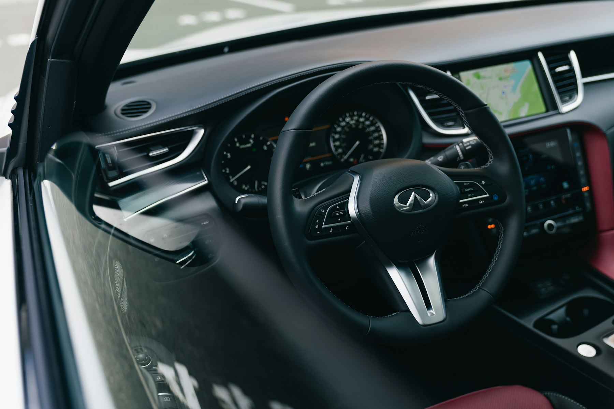
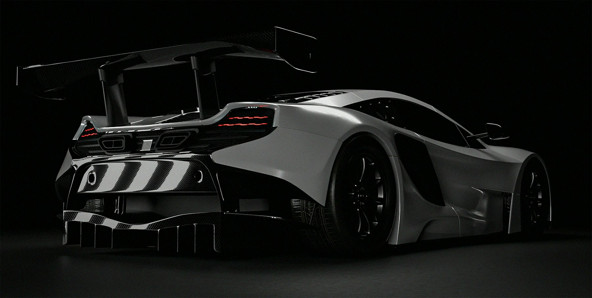

Featured · NewsNoxara Tur world premiere
Practical advice and ideas from the Noxara team on noxara Tur world premiere.
Read article →

EngineeringInside the quad-turbo V12 hybrid
Practical advice and ideas from the Noxara team on inside the quad-turbo V12 hybrid.

DesignSculpting active aerodynamics
Practical advice and ideas from the Noxara team on sculpting active aerodynamics.
AtelierBespoke interiors, stitch by stitch
Practical advice and ideas from the Noxara team on bespoke interiors, stitch by stitch.

RacingRecord lap at the Nürburgring
Practical advice and ideas from the Noxara team on record lap at the Nürburgring.

EventsOwners' drive through the Alps
Practical advice and ideas from the Noxara team on owners' drive through the Alps.
No articles found
Newsletter
Stay in the loop
Insights, news and ideas from our team — once a month, never spam.